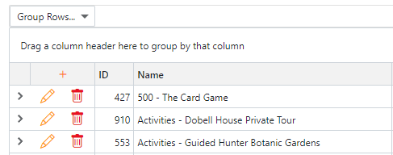

|
<< Click to Display Table of Contents >> Navigation: User Interface (UI) elements > UI Components > Form |
Normally, data is entered via a Form. A form is accessed usually via the grid or directly from the menu if a grid is not required.
If accessed via the grid, that grid will have a combination of add, change or delete buttons. The buttons displayed will be determined by the developer. The Add button is displayed as a plus (+) symbol on the grid's column header. The Edit and Delete buttons are displayed as a pencil and bin on each row respectively.
 |
The form is displayed as a modal window above the grid...
Enter the data as required and click the Save button. If you are simply viewing the data, click the Cancel button to ensure you do not save any unwanted changes.
When Save is clicked, the software will validate your input. If there are issues the system will display messages to inform you of what needs to be changed. Change your input until it is acceptable and click Save again.
Sometimes a form will contain a Discontinued check box. This will be provided in place of the Delete button on the grid. A discontinued record is a record you no longer require within the system, yet other records may depend on it so that it cannot be deleted. Discontinuing a record can therefore be thought of as a soft delete; it is no longer available for use but remains to ensure data integrity within the database.
Hint: Find Required Fields
To find all required fields on a new record, press the Save button prior to entering any data. All required fields will be displayed as validation errors.
Editors are the boxes into which you enter data. They range from the humble text box into which any character may be entered through to the rich text editor providing word processing functionality to the system.
In between there are editors for each type of data; the date editor to enter dates, spin editor to enter whole numbers, selection editors to select one or more items from a list and editors to enter currency and decimal numbers. The purpose of these editors is to reduce the opportunity to enter invalid data into the database. Thus a date editor, for example will only accept valid dates.
All editors other than the simple text editor will have a button to provide additional functionality via a drop-down window. This will be specific for the data type being entered. The date editor for example, will display a calendar from which to select the date. It is not compulsory to use the calendar as the date may be entered using the keyboard.
Hint: Use Tab to move between editors
Use the tab key to move between editors. The tab key will move to the next editor in sequence. The SHIFT-tab combination will move to the previous editor. The tab key is a far more efficient method of data entry than using a mouse. Importantly, it reduces the potential of Repetitive Strain Injury (RSI) that can accompany heavy mouse use.